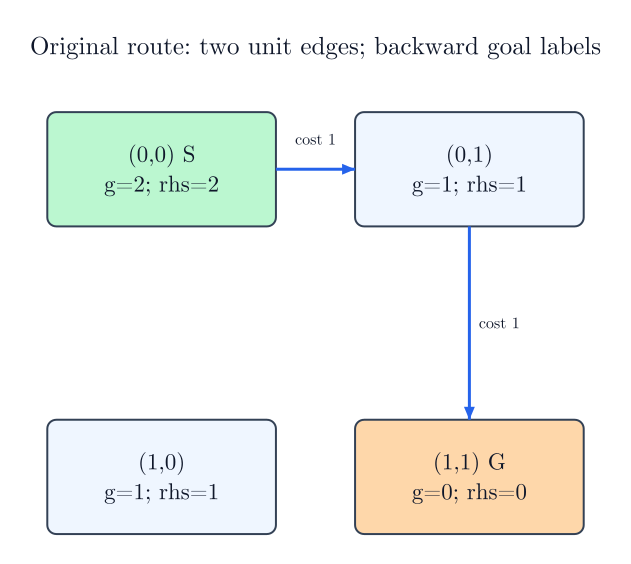
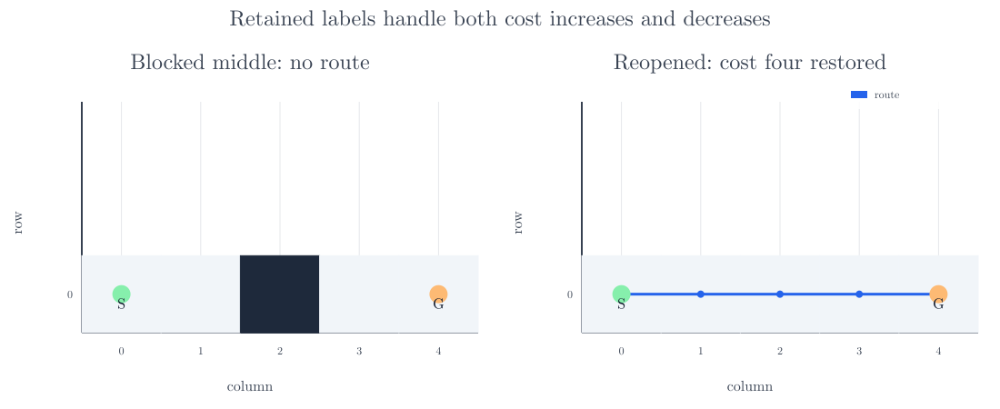
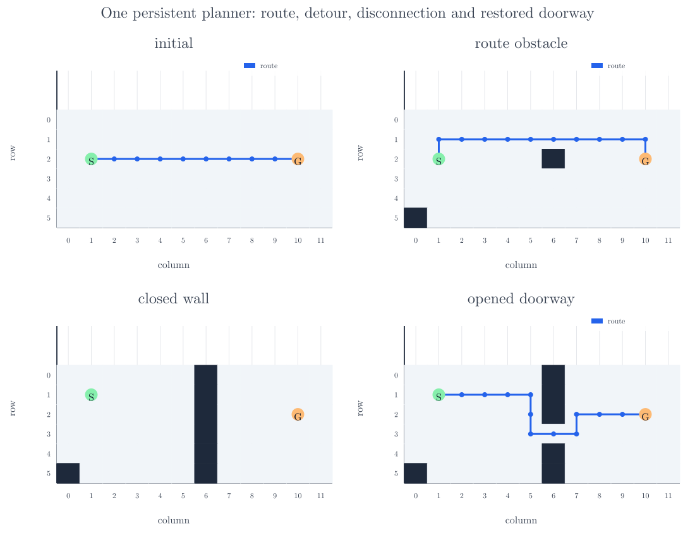
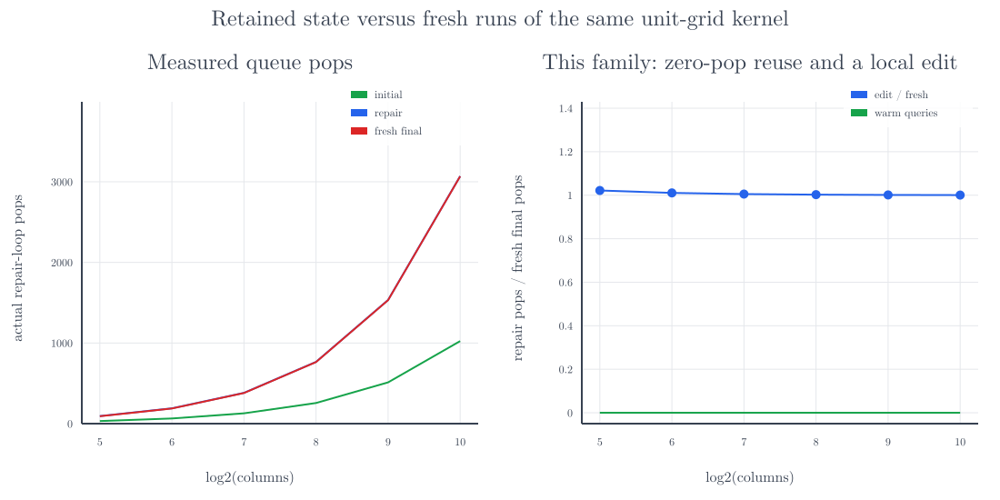
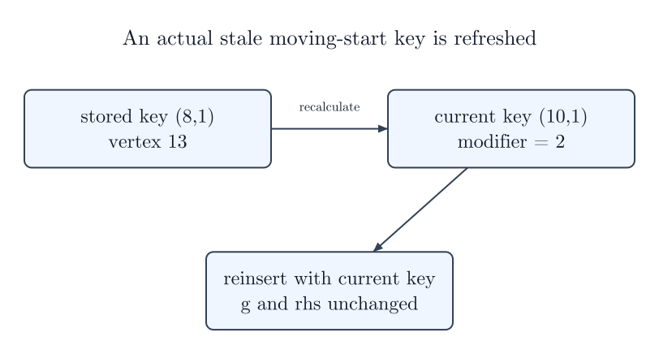

D* Lite on a Changing Grid: Retained Labels, Actual Repairs and Moving Starts
Abstract
Given a grid map, a start and a goal, we want an optimal route that can be repaired when obstacles change or the start moves. Starting a new search after every discovery discards useful earlier distance labels. D* Lite keeps committed and one-step cost-to-go estimates and repairs only the inconsistent frontier needed for the current query. We retain the original two-by-two example, expose actual lower/raise/key-refresh operations, and follow a map through a detour, a complete wall and a reopened doorway. Measured work compares retained state with fresh runs of the same kernel. The original one-shot function remains available, while a new persistent canonical C++ planner provides the incremental state the earlier D*-style example did not retain.
Start with the original two-by-two grid
Use four-neighbor unit movement on an empty two-by-two occupancy grid. Start at (row 0, column 0), and fix the goal at (1,1). An optimal route has two edges and includes three cells. The original d_star_replan entry point still returns that result. It now constructs a fresh D* Lite planner; retaining a DStarLiteGrid object across calls is what enables incremental reuse.
D* Lite searches backward from the goal. A committed label g(u) and one-step label rhs(u) are initially infinite, except rhs(goal)=0. The first actual pop lowers the goal's g to zero. Its two neighbors receive rhs=1, and the start eventually receives g=rhs=2. The table shows all four actual pops, and the native diagram shows the repaired labels and the returned route. Coordinates are zero-based (row, column).
#include <dm/dm.hpp>
int main() {
std::filesystem::create_directories("build");
const auto grid=dm::algorithms::grid_obstacle_mask(2,2);
dm::algorithms::DStarLiteGrid planner(grid,{0,0},{1,1});
const auto t=planner.repair_trace();
const auto text=[](std::uint64_t x){return x==dm::algorithms::d_star_infinity?std::string("inf"):std::to_string(x);};
std::print("Original grid: found {}; cost {:.0f}; inclusive cells {}; trace entries {}.\n\n",t.repair.route.found,t.repair.route.cost,t.repair.route.path.size(),t.captured_entries);
std::print("| popped cell | stored key | g before | rhs before | g after | rhs after |\n| :--- | :--- | :--- | :--- | :--- | :--- |\n");
for(const auto& s:t.steps)
std::print("| ({},{}) | ({},{}) | {} | {} | {} | {} |\n",s.vertex/2,s.vertex%2,s.old_key.first,s.old_key.second,text(s.g_before),text(s.rhs_before),text(s.g_after),text(s.rhs_after));
dm::graphics::Diagram d(88,1100);
dm::graphics::DiagramNodeStyle box;box.width=2.6;box.height=1.3;box.font_size=23;
for(std::size_t u=0;u<4;++u) {
box.fill=u==0?dm::graphics::RGB{187,247,208}:u==3?dm::graphics::RGB{254,215,170}:dm::graphics::RGB{239,246,255};
d.node(std::to_string(u),{3.5*(u%2),-3.5*static_cast<double>(u/2)},std::format("({},{}){}\ng={}; rhs={}",u/2,u%2,u==0?" S":u==3?" G":"",t.final_g[u],t.final_rhs[u]),box);
}
dm::graphics::DiagramStroke route;route.color={37,99,235};route.width=3;
for(std::size_t i=1;i<t.repair.route.path.size();++i) {
const auto a=t.repair.route.path[i-1],b=t.repair.route.path[i];
d.edge(std::to_string(2*a.first+a.second),std::to_string(2*b.first+b.second),"cost 1",route);
}
d.text({1.75,1.4},"Original route: two unit edges; backward goal labels",25)
.save_svg("build/dstar_tiny.svg");
}Original grid: found true; cost 2; inclusive cells 3; trace entries 25.
| popped cell | stored key | g before | rhs before | g after | rhs after |
|---|---|---|---|---|---|
| (1,1) | (2,0) | inf | 0 | 0 | 0 |
| (0,1) | (2,1) | inf | 1 | 1 | 1 |
| (1,0) | (2,1) | inf | 1 | 1 | 1 |
| (0,0) | (2,2) | inf | 2 | 2 | 2 |

The implemented variant and its consistency equations
Stentz's original D* and Koenig–Likhachev's D* Lite are related incremental-search algorithms with different internal machinery. This report implements D* Lite. The earlier d_star_replan body ran a cold A* search on every call; it had no retained labels or repair queue. The new one-shot wrapper preserves the original interface, and the persistent class makes reuse explicit rather than implying that a sequence of independent calls shares state.
For N grid cells, every shortest reachable route can be chosen simple and has at most N−1 unit edges. Exact uint64_t labels use a named infinity sentinel. Backups at N or larger are saturated to infinity, which cannot remove a possible shortest route. Dimensions and total cell count are validated, with a mandatory INT_MAX cell bound so legacy double route costs remain exact integers.
For a free goal, rhs(goal)=0. A blocked goal has an infinite boundary; unblocking it restores zero. Every blocked non-goal cell has infinite rhs. At any other free cell,
A cell is locally consistent when g(u)=rhs(u). The indexed binary heap contains exactly the inconsistent cells, at most one entry per cell. Let m(u)=min(g(u),rhs(u)) and h be Manhattan distance. Its mathematical priority is the lexicographic pair
Remaining heap ties use row-major cell id. A free move costs one, so Manhattan distance is an admissible and consistent lower bound even when obstacles force a detour. The next queued vertex is processed as follows: refresh a stale moving-start key; lower g to rhs when g>rhs; or raise g to infinity when g<rhs, then recompute affected backups. Each changed occupancy cell updates itself and its in-bounds neighbors, covering all edges whose cost changed.
Repair stops when the start is locally consistent and no smaller queued key remains. D* Lite's consistency/priority argument then gives the start's optimal cost. It does not require every other cell to be solved; unused frontier labels can remain stale or infinite. Route extraction selects a free successor minimizing 1+g(v), with smallest-id ties and strictly decreasing g, until it reaches the goal.
Watch a route disappear and return in a five-cell corridor
On a one-by-five free corridor, the backward labels are 4, 3, 2, 1, 0. Block cell (0,2): the start component loses every connection to the goal, so old finite labels in that component must be invalidated. Reopen the cell: the retained goal-side labels allow finite costs to propagate back toward the start. These are actual raise and lower operations, not a reconstructed animation or a new cold search.
#include <dm/dm.hpp>
int main() {
std::filesystem::create_directories("build");
dm::algorithms::DStarLiteGrid p(dm::algorithms::grid_obstacle_mask(1,5),{0,0},{0,4});
const auto first=p.repair_trace();
p.update_cells({{{0,2},true}});const auto blocked=p.repair_trace();
p.update_cells({{{0,2},false}});const auto reopened=p.repair_trace();
const auto text=[](std::uint64_t x){return x==dm::algorithms::d_star_infinity?std::string("inf"):std::to_string(x);};
std::print("| stage | found | cost when found | pops | lowerings | raisings | final g labels |\n| :--- | :--- | :--- | ---: | ---: | ---: | :--- |\n");
const std::array<const char*,3> names{"initial","blocked middle","reopened"};
const std::array<const dm::algorithms::DStarTrace*,3> traces{&first,&blocked,&reopened};
for(std::size_t i=0;i<traces.size();++i) {
const auto& t=*traces[i];std::string labels;
for(auto value:t.final_g) {if(!labels.empty())labels+=" ";labels+=text(value);}
std::print("| {} | {} | {} | {} | {} | {} | {} |\n",names[i],t.repair.route.found,t.repair.route.found?std::format("{:.0f}",t.repair.route.cost):"—",t.repair.work.pops,t.repair.work.lowerings,t.repair.work.raisings,labels);
}
std::print("\n| blocked-stage cell | action | g before | rhs before | g after | rhs after |\n| ---: | :--- | :--- | :--- | :--- | :--- |\n");
const std::array<const char*,3> action{"refresh key","lower","raise"};
for(const auto& s:blocked.steps)
std::print("| {} | {} | {} | {} | {} | {} |\n",s.vertex,action[static_cast<int>(s.action)],text(s.g_before),text(s.rhs_before),text(s.g_after),text(s.rhs_after));
auto a=dm::algorithms::plot_grid_route(blocked.blocked,blocked.repair.route,blocked.start,blocked.goal);
auto b=dm::algorithms::plot_grid_route(reopened.blocked,reopened.repair.route,reopened.start,reopened.goal);
a.title("Blocked middle: no route");b.title("Reopened: cost four restored");
dm::graphics::RLayout::create(1,2).add(a).add(b).size(1100,450)
.title("Retained labels handle both cost increases and decreases").fit_panels()
.save_svg("build/dstar_corridor.svg");
}| stage | found | cost when found | pops | lowerings | raisings | final g labels |
|---|---|---|---|---|---|---|
| initial | true | 4 | 5 | 5 | 0 | 4 3 2 1 0 |
| blocked middle | false | — | 3 | 0 | 3 | inf inf inf 1 0 |
| reopened | true | 4 | 3 | 3 | 0 | 4 3 2 1 0 |
| blocked-stage cell | action | g before | rhs before | g after | rhs after |
|---|---|---|---|---|---|
| 2 | raise | 2 | inf | inf | inf |
| 1 | raise | 3 | inf | inf | inf |
| 0 | raise | 4 | inf | inf | inf |

Follow one planner through discoveries, movement and a new doorway
Use a six-by-twelve free grid, start (2,1), goal (2,10). The initial cost is nine. An unchanged query and an off-route edit at (5,0) keep that cost. Blocking (2,6) forces an eleven-step detour. The caller then moves the start to the next cell on that returned route; the remaining cost is ten. Closing the entire column 6 removes every route. Opening its cell (3,6) creates a doorway and restores a cost-twelve route. The goal remains fixed throughout.
A moving start changes Manhattan priorities. For each relocation a→b, update kₘ←kₘ+h(a,b). The triangle inequality gives h(a,b)+h(b,u)≥h(a,u), so old stored keys remain lower bounds on current keys. A popped old key that is too small is refreshed before label expansion. This avoids eagerly rebuilding the entire queue on movement. Modifier arithmetic reserves 4N headroom below the integer infinity sentinel and rejects overflow before changing the start.
Each table row compares retained repair pops with a newly initialized D* Lite run on the same current map/start/goal. Pending map/start-update work belongs to that repair's counters. A zero pop count does not mean the API did no work: edits still perform Bellman backups, and returning a route still visits/copies its cells.
#include <dm/dm.hpp>
int main() {
std::filesystem::create_directories("build");
dm::algorithms::DStarLiteGrid p(dm::algorithms::grid_obstacle_mask(6,12),{2,1},{2,10});
std::vector<dm::algorithms::DStarTrace> stage;
stage.push_back(p.repair_trace());stage.push_back(p.repair_trace());
p.update_cells({{{5,0},true}});stage.push_back(p.repair_trace());
p.update_cells({{{2,6},true}});stage.push_back(p.repair_trace());
p.move_start(stage.back().repair.route.path[1]);stage.push_back(p.repair_trace());
std::vector<dm::algorithms::GridCellUpdate> wall;
for(int row=0;row<6;++row)wall.push_back({{row,6},true});
p.update_cells(wall);stage.push_back(p.repair_trace());
p.update_cells({{{3,6},false}});stage.push_back(p.repair_trace());
const std::array<const char*,7> names{"initial","unchanged","off-route edit","route obstacle","move one step","closed wall","opened doorway"};
std::print("| stage | found | cost if found | changed cells | start moves | vertex updates | repair pops | fresh pops | lower / raise / refresh |\n| :--- | :--- | :--- | ---: | ---: | ---: | ---: | ---: | :--- |\n");
for(std::size_t i=0;i<stage.size();++i) {
const auto& t=stage[i];dm::algorithms::DStarLiteGrid fresh(t.blocked,t.start,t.goal);
const auto cold=fresh.repair();const auto& w=t.repair.work;
if(cold.route.found!=t.repair.route.found || cold.route.cost!=t.repair.route.cost)throw std::runtime_error("fresh/repair mismatch");
std::print("| {} | {} | {} | {} | {} | {} | {} | {} | {} / {} / {} |\n",names[i],t.repair.route.found,t.repair.route.found?std::format("{:.0f}",t.repair.route.cost):"—",w.changed_cells,w.start_moves,w.vertex_updates,w.pops,cold.work.pops,w.lowerings,w.raisings,w.key_refreshes);
}
auto layout=dm::graphics::RLayout::create(2,2);
for(std::size_t i:{0u,3u,5u,6u}) {
const auto& t=stage[i];auto plot=dm::algorithms::plot_grid_route(t.blocked,t.repair.route,t.start,t.goal);
plot.title(names[i]);layout.add(plot);
}
layout.size(1100,850).title("One persistent planner: route, detour, disconnection and restored doorway")
.fit_panels().save_svg("build/dstar_discoveries.svg");
}| stage | found | cost if found | changed cells | start moves | vertex updates | repair pops | fresh pops | lower / raise / refresh |
|---|---|---|---|---|---|---|---|---|
| initial | true | 9 | 0 | 0 | 40 | 10 | 10 | 10 / 0 / 0 |
| unchanged | true | 9 | 0 | 0 | 0 | 0 | 10 | 0 / 0 / 0 |
| off-route edit | true | 9 | 1 | 0 | 3 | 0 | 10 | 0 / 0 / 0 |
| route obstacle | true | 11 | 1 | 0 | 138 | 32 | 30 | 26 / 6 / 0 |
| move one step | true | 10 | 0 | 1 | 0 | 0 | 14 | 0 / 0 / 0 |
| closed wall | false | — | 5 | 0 | 161 | 38 | 30 | 17 / 17 / 4 |
| opened doorway | true | 12 | 1 | 0 | 69 | 16 | 34 | 16 / 0 / 0 |

The route obstacle takes 32 retained pops versus 30 fresh pops, and the closed wall takes 38 versus 30. Reopening the doorway instead takes 16 retained pops versus 34 fresh pops. The same planner can therefore show both extra repair work and useful reuse.
Measure reuse without promising every repair is cheaper
The indexed queue has at most N entries. Each insert/remove costs O(log N); a Bellman backup checks at most four neighbors. Persistent storage is O(N). A changed-cell batch costs O(k log N), with updates applied in input order. A repair can still expand much of the map, so reusing state is not a guarantee that each individual query beats a fresh search. Zero-pop cases are useful evidence of reuse, rather than a bound for every obstacle pattern.
The next controlled family uses three rows and C columns, start on the middle row's left end and goal on its right end. A cold run solves the straight corridor. An unchanged query, a one-cell move along that route and an off-route corner obstacle reuse those labels. Finally a middle- row obstacle forces a detour. A fresh planner on that final map supplies the comparison. Requested widths are powers of two from 32 through 1024; all measured route costs/reachability results are checked before plotting. Queue-pop counts include refreshes as well as lower/raise expansions. Allocation, validation, heap comparisons and route output are excluded from these counters; neither panel measures CPU time or robot latency.
#include <dm/dm.hpp>
int main() {
std::filesystem::create_directories("build");
std::vector<double> width,cold_pops,edit_pops,fresh_pops,ratio;
std::print("| columns | cells | initial pops | unchanged pops | moved pops | off-route pops | route-edit pops | fresh final pops | final cost |\n| ---: | ---: | ---: | ---: | ---: | ---: | ---: | ---: | ---: |\n");
for(int columns:{32,64,128,256,512,1024}) {
dm::algorithms::DStarLiteGrid p(dm::algorithms::grid_obstacle_mask(3,columns),{1,0},{1,columns-1});
const auto cold=p.repair();const auto unchanged=p.repair();
p.move_start({1,1});const auto moved=p.repair();
p.update_cells({{{0,0},true}});const auto off=p.repair();
p.update_cells({{{1,columns/2},true}});const auto edited=p.repair();
dm::algorithms::DStarLiteGrid fresh(p.grid(),p.start(),p.goal());const auto final=fresh.repair();
if(!edited.route.found || edited.route.cost!=columns || final.route.cost!=edited.route.cost || unchanged.work.pops || moved.work.pops || off.work.pops)
throw std::runtime_error("reuse-family invariant failed");
std::print("| {} | {} | {} | {} | {} | {} | {} | {} | {:.0f} |\n",columns,3*columns,cold.work.pops,unchanged.work.pops,moved.work.pops,off.work.pops,edited.work.pops,final.work.pops,edited.route.cost);
width.push_back(std::log2(columns));cold_pops.push_back(cold.work.pops);edit_pops.push_back(edited.work.pops);fresh_pops.push_back(final.work.pops);ratio.push_back(1.0*edited.work.pops/final.work.pops);
}
auto a=dm::graphics::RPlot::create();
a.line(width,cold_pops,"initial",{22,163,74}).line(width,edit_pops,"repair",{37,99,235})
.line(width,fresh_pops,"fresh final",{220,38,38})
.title("Measured queue pops").x_label("log2(columns)").y_label("actual repair-loop pops")
.y_limits(0,std::max({cold_pops.back(),edit_pops.back(),fresh_pops.back()})*1.3+1);
auto b=dm::graphics::RPlot::create();
b.line(width,ratio,"edit / fresh",{37,99,235}).points(width,ratio,"",{37,99,235},5)
.line(width,std::vector<double>(width.size(),0),"warm queries",{22,163,74})
.title("This family: zero-pop reuse and a local edit").x_label("log2(columns)")
.y_label("repair pops / fresh final pops").y_limits(-.05,*std::max_element(ratio.begin(),ratio.end())*1.35+.05);
dm::graphics::RLayout::create(1,2).add(a).add(b).size(1100,550)
.title("Retained state versus fresh runs of the same unit-grid kernel")
.fit_panels().save_svg("build/dstar_reuse.svg");
}| columns | cells | initial pops | unchanged pops | moved pops | off-route pops | route-edit pops | fresh final pops | final cost |
|---|---|---|---|---|---|---|---|---|
| 32 | 96 | 32 | 0 | 0 | 0 | 94 | 92 | 32 |
| 64 | 192 | 64 | 0 | 0 | 0 | 190 | 188 | 64 |
| 128 | 384 | 128 | 0 | 0 | 0 | 382 | 380 | 128 |
| 256 | 768 | 256 | 0 | 0 | 0 | 766 | 764 | 256 |
| 512 | 1536 | 512 | 0 | 0 | 0 | 1534 | 1532 | 512 |
| 1024 | 3072 | 1024 | 0 | 0 | 0 | 3070 | 3068 | 1024 |

In this family each route edit takes exactly two more pops than its fresh comparison: 94 versus 92 at width 32, and 3,070 versus 3,068 at width 1,024. Those curves nearly overlap in the left panel; their ratio approaches one from above in the right panel. The zero-pop unchanged, moved and off-route queries are the observed savings here.
Actual key refresh, resumable capture and safe ownership
The trace captures actual pre/post pop operands, initial/final g/rhs, current occupancy and initial queued keys. It is not a replay. Its logical budget is 5N+Q+P entries: one grid cell and four label elements per vertex, Q initial queue records and P captured pop records. The complete base cost is checked before copying; each extra pop entry is checked before mutating the queue or labels. Scalar metadata, working buffers, paths and allocator bytes are not part of that logical count. The default cap is one million; zero disables only this optional cap.
If a cap stops a repair after some completed pops, the persistent state remains usable. A later repair resumes; work_before identifies pending interval work, while the new steps vector contains only the resumed call's pops. Work resets only after a successful result is prepared. For the original four-cell input, base cost 21 plus four pops gives 25 entries. A cap of 24 stops before the last pop and can then be resumed.
All shape/cell/endpoint limits are checked before construction. Invalid edit coordinates are checked across the entire batch before any edit; invalid moves leave the start unchanged. The class preallocates its indexed queue's full-cell capacity. Copies retain independent buffers and that capacity; assignment constructs a complete replacement before swapping, preserving the old planner on allocation failure.
The next moving-start case keeps a nonempty frontier. Its first stale stored key is (8,1), while the current key is (10,1). The vertex is requeued without changing its g or rhs. This is the lazy-key repair that a stateless shortest-path call cannot demonstrate.
#include <dm/dm.hpp>
int main() {
std::filesystem::create_directories("build");
const auto grid=dm::algorithms::grid_obstacle_mask(2,2);
dm::algorithms::DStarLiteGrid exact(grid,{0,0},{1,1});
const auto full=exact.repair_trace(25);
dm::algorithms::DStarLiteGrid limited(grid,{0,0},{1,1});int caps=0;
try{(void)limited.repair_trace(24);}catch(const std::length_error&){++caps;}
const auto resumed=limited.repair_trace();
std::print("Exact entries {}; cap rejections {}; resumed-call pops {}; earlier pending pops {}; total interval pops {}; cost {:.0f}.\n",full.captured_entries,caps,resumed.steps.size(),resumed.work_before.pops,resumed.repair.work.pops,resumed.repair.route.cost);
const auto saved=exact.grid();int invalid=0;
try{exact.update_cells({{{0,0},true},{{9,9},false}});}catch(const std::invalid_argument&){++invalid;}
try{exact.move_start({-1,0});}catch(const std::invalid_argument&){++invalid;}
std::print("Invalid batch/move rejections {}/2; occupancy unchanged {}; start unchanged {}.\n",invalid,exact.grid()==saved,exact.start()==std::pair<int,int>{0,0});
auto copy=exact;copy.update_cells({{{0,0},true}});
std::print("Independent copy: original found {}; changed copy found {}.\n",exact.repair().route.found,copy.repair().route.found);
dm::algorithms::DStarLiteGrid moved(dm::algorithms::grid_obstacle_mask(5,7),{2,0},{2,6});
(void)moved.repair();moved.move_start({0,0});const auto t=moved.repair_trace();
const auto it=std::find_if(t.steps.begin(),t.steps.end(),[](const auto& s){return s.action==dm::algorithms::DStarAction::rekey;});
if(it==t.steps.end() || it->g_before!=it->g_after || it->rhs_before!=it->rhs_after)throw std::runtime_error("missing actual key refresh");
std::print("Moved-start query: cost {:.0f}; total pops {}; key refreshes {}; first refreshed vertex {}; key ({},{}) -> ({},{}).\n",t.repair.route.cost,t.repair.work.pops,t.repair.work.key_refreshes,it->vertex,it->old_key.first,it->old_key.second,it->current_key.first,it->current_key.second);
dm::graphics::Diagram d(80,1100);
dm::graphics::DiagramNodeStyle box;box.width=3.8;box.height=1.2;box.font_size=24;
d.node("old",{0,1.5},std::format("stored key ({},{})\nvertex {}",it->old_key.first,it->old_key.second,it->vertex),box)
.node("new",{5.6,1.5},std::format("current key ({},{})\nmodifier = {}",it->current_key.first,it->current_key.second,t.key_modifier),box)
.node("result",{2.8,-1},"reinsert with current key\ng and rhs unchanged",box)
.edge("old","new","recalculate").edge("new","result")
.text({2.8,2.9},"An actual stale moving-start key is refreshed",26)
.save_svg("build/dstar_boundaries.svg");
}Exact entries 25; cap rejections 1; resumed-call pops 1; earlier pending pops 3; total interval pops 4; cost 2. Invalid batch/move rejections 2/2; occupancy unchanged true; start unchanged true. Independent copy: original found true; changed copy found false. Moved-start query: cost 8; total pops 28; key refreshes 14; first refreshed vertex 13; key (8,1) -> (10,1).

Verification and limits
Native tests compare all 41,472 three-by-three obstacle-mask/terminal combinations against independent breadth-first distances. A further 29,952 cold/flip/restore repairs cover every two-by-three mask and endpoint pair. Their trace certificates replay the actual indexed-open entries, integer keys, Bellman backups and lower/raise/refresh branches, then compare all final labels, queue membership, termination and work counters. Seeded batch edits and moving starts add 2,400 changing-map queries, including all three pop actions.
Boundary tests cover blocked start/goal, empty/ragged grids, complete input validation, exact/one-short/disabled caps, resumed work accounting, copy/assignment independence, malformed supplied plot paths and a 50,001-cell corridor with block/reopen and warm reuse. The native plot helper validates route feasibility and cost but is not an independent optimality certificate; the breadth-first oracle supplies that check.
The planner solves a known occupancy snapshot with a fixed goal. It does not infer obstacles, sense a map, choose when to move, model uncertainty or handle weighted/diagonal travel. Its incremental state can save repeated work, while a large change can still require broad repair. Preserving those qualifications is essential when using the original D*-style interface to discuss a genuine incremental method.
References
S. Koenig and M. Likhachev (2002), [D* Lite](https://www.cs.cmu.edu/~motionplanning/papers/sbp_papers/integrated3/koenig_dstarlite_aaai02b.pdf), AAAI, 476–483, develops the g/rhs priority repair and moving-start modifier. This implementation uses its basic consistency termination, an indexed heap, deterministic row-major ties, exact bounded unit-distance labels and explicit blocked-terminal conventions. A. Stentz (1994), [Optimal and Efficient Path Planning for Partially-Known Environments](https://publications.ri.cmu.edu/optimal-and-efficient-path-planning-for-partially-known-environments), ICRA 4, 3310–3317, introduces the earlier D* method. The persistent API here is D* Lite; the original one-shot route remains a convenience call that begins with fresh planner state.